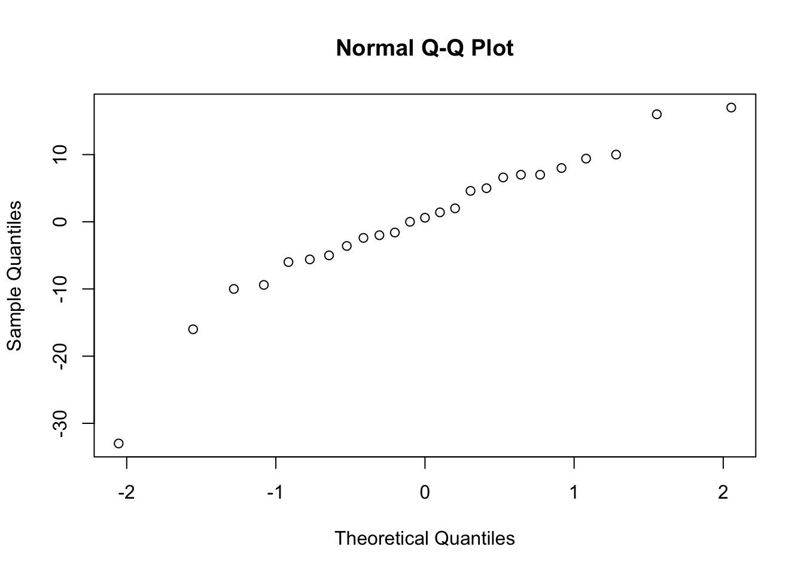
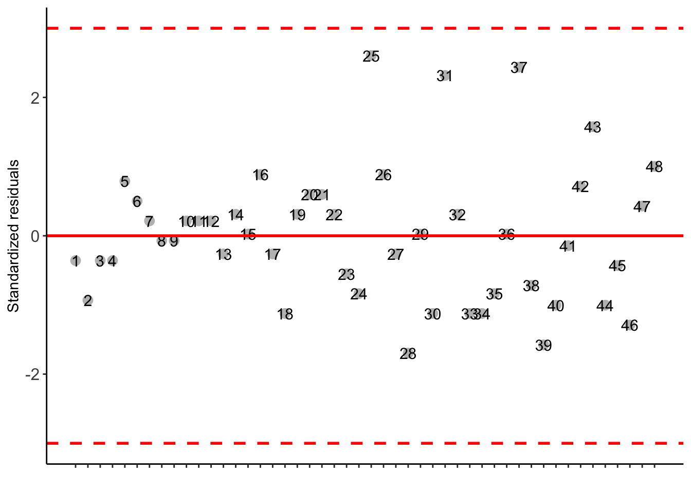
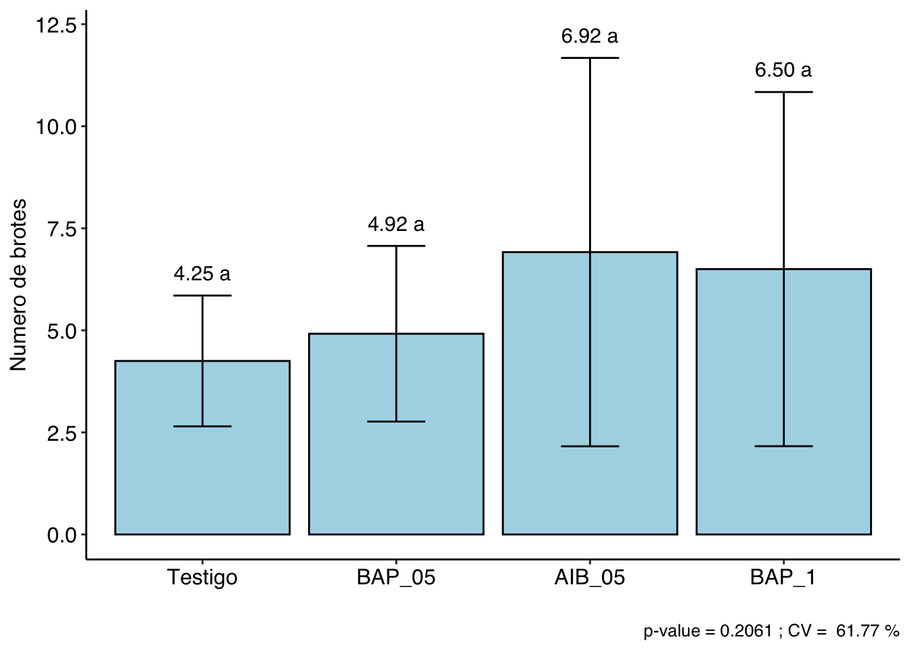
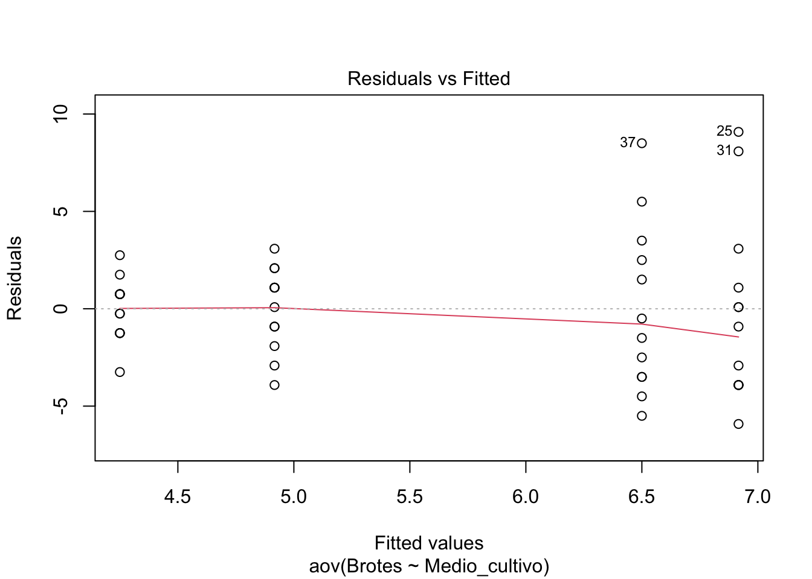
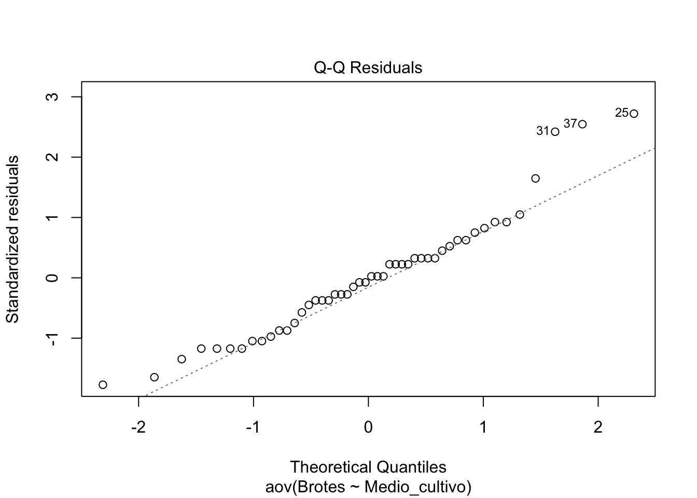
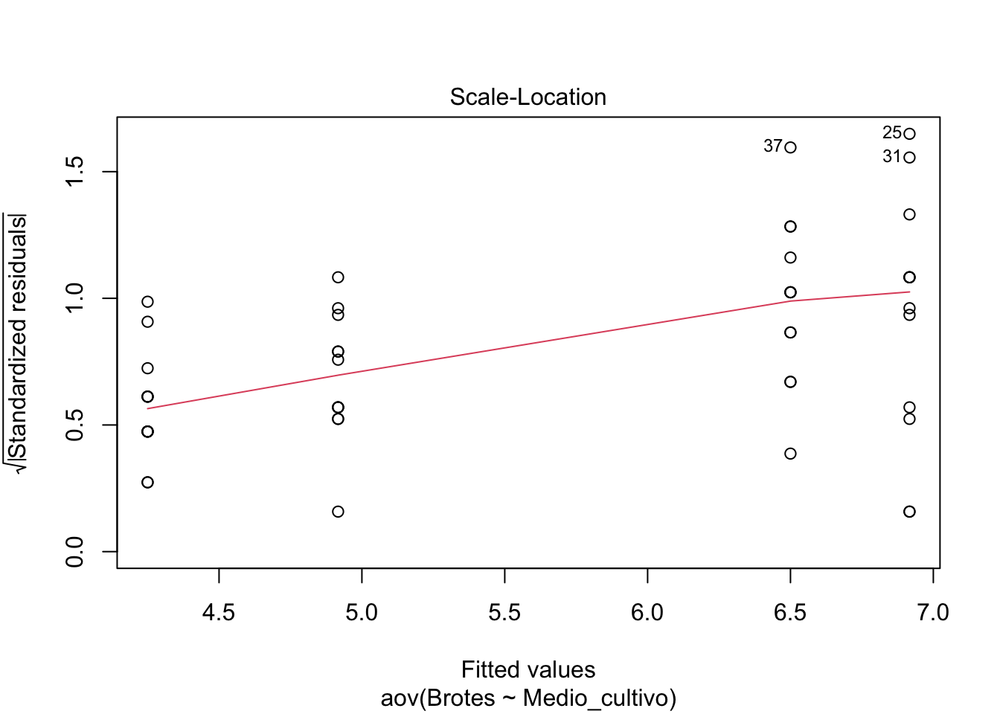
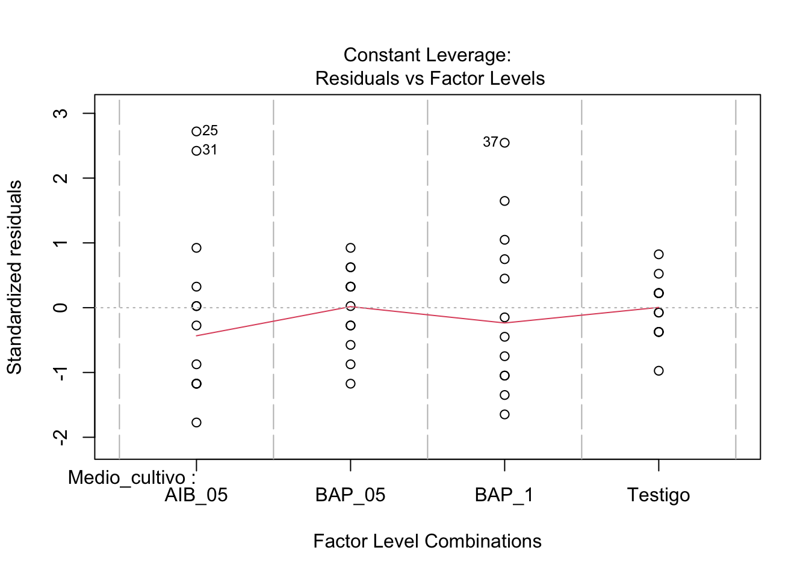

Two-sample t test power calculation
n = 33.82555
d = 0.8
sig.level = 0.05
power = 0.9
alternative = two.sided
NOTE: n is number in *each* group
Queremos comparar 5 grupos, con 25 sujetos por grupo, para un nivel de significación del 5%. Calculamos la potencia de la prueba para distintos valores de tamaño de efecto (f2):
Balanced one-way analysis of variance power calculation
k = 5
n = 25
f = 0.4
sig.level = 0.05
power = 0.9569163
NOTE: n is number in each group
La potencia será de • 11.8% para detectar un efecto pequeño, • 57.4% para detectar un efecto moderado y • 95.7% para detectar un efecto grande.
ANDEVA CON R-Studio para diseño experimental
Paquetes:
agricolae: Procedimientos estadísticos básicos del diseño de experimentos, diseño de factor simple, bloques aleatorios, cuadrado latino, cuadrados grecolatinos, así como pruebas de diferencia de medias.
car: técnicas para regresión aplicada
phia: técnicas para graficar diseños experimentales
DoE.base: apoyos para diseños factoriales
DoE.wrapper: creación de diseños industriales e interactúa con otros paquetes para diseño de experimentos, diseños para estimar funciones cuadráticas tales como diseños compuestos centrales y diseños de Box-Behnken
FrF2: Diseños factoriales a 2 niveles (2k) y factoriales fraccionados a 2 niveles (2k-p)
qualityTools: Diseños factoriales a 2 niveles, factoriales fraccionados a 2 niveles, análisis de múltiples respuestas, diseños de superficie de respuesta, mezcla de diseños, Método Taguchi
rsm: Metodología de superficie de respuesta
Estadística de prueba: Obtención de la Tabla Andeva (ANOVA)
Importar los datos Leer los datos en R Studio. Digitando directamente (copiar y pegar).
As the calculated p-value is greater than the 5% significance level,hypothesis H0 is not rejected. Therefore, the variances can be considered homogeneous
As the calculated p-value is greater than the 5% significance level, hypothesis H0 is not rejected. Therefore, errors can be considered independent
-----------------------------------------------------------------
Additional Information
-----------------------------------------------------------------
CV (%) = 9.47
MStrat/MST = 1
Mean = 121.4
Median = 96
Possible outliers = No discrepant point
-----------------------------------------------------------------
Analysis of Variance
-----------------------------------------------------------------
Df Sum Sq Mean.Sq F value Pr(F)
Treatment 4 124099.6 31024.90 234.8236 1.674412e-16
Residuals 20 2642.4 132.12
As the calculated p-value, it is less than the 5% significance level.The hypothesis H0 of equality of means is rejected. Therefore, at least two treatments differ
-----------------------------------------------------------------
Multiple Comparison Test: Tukey HSD
-----------------------------------------------------------------
resp groups
Kopu 205.0 a
Huia 203.0 a
Aran 98.0 b
Will 67.4 c
Pitau 33.6 d
Una vez verificada que nuestras variables esten en formato fator y numerica se procede a realizar la respectiva analisis de varianza.
### analisis de varianzaav_nema =aov(Nem~Cultivar, data = datadca)summary(av_nema)
Df Sum Sq Mean Sq F value Pr(>F)
Cultivar 4 124100 31025 234.8 <2e-16 ***
Residuals 20 2642 132
---
Signif. codes: 0 '***' 0.001 '**' 0.01 '*' 0.05 '.' 0.1 ' ' 1
De acuerdo a la tabla de analisis de varianza rechazamos de la hipotesis nula y al menos existe diferencia significativa entre cultivares respecto al numero de nematodos.
Verificada la diferencia significativa, se procede a un analisis de medias para identificar el cultivar menos infestado con nematodos.
### analisis de datos a posteriori##prueba posteriori LSDlsd_nem =LSD.test(av_nema, "Cultivar", group = T, console = T)
Study: av_nema ~ "Cultivar"
LSD t Test for Nem
Mean Square Error: 132.12
Cultivar, means and individual ( 95 %) CI
Nem std r se LCL UCL Min Max Q25 Q50 Q75
Aran 98.0 12.409674 5 5.140428 87.27726 108.72274 82 114 92 96 106
Huia 203.0 19.235384 5 5.140428 192.27726 213.72274 170 220 205 210 210
Kopu 205.0 7.905694 5 5.140428 194.27726 215.72274 195 215 200 205 210
Pitau 33.6 5.856620 5 5.140428 22.87726 44.32274 28 43 30 32 35
Will 67.4 6.308724 5 5.140428 56.67726 78.12274 58 74 65 68 72
Alpha: 0.05 ; DF Error: 20
Critical Value of t: 2.085963
least Significant Difference: 15.16425
Treatments with the same letter are not significantly different.
Nem groups
Kopu 205.0 a
Huia 203.0 a
Aran 98.0 b
Will 67.4 c
Pitau 33.6 d
De acuerdo a los resultados de diferencia minima significativa se puede identificar que el cultivar Pitau tuvo una infestacion minima de nematodos.
Asimismo, se procede a analizar con la prueba de TUKEY
##prueba posteriori TUKEYdhs_nem =HSD.test(av_nema, "Cultivar", alpha =0.01, group = T)print(dhs_nem)
$statistics
MSerror Df Mean CV MSD
132.12 20 121.4 9.46816 27.20958
$parameters
test name.t ntr StudentizedRange alpha
Tukey Cultivar 5 5.293253 0.01
$means
Nem std r se Min Max Q25 Q50 Q75
Aran 98.0 12.409674 5 5.140428 82 114 92 96 106
Huia 203.0 19.235384 5 5.140428 170 220 205 210 210
Kopu 205.0 7.905694 5 5.140428 195 215 200 205 210
Pitau 33.6 5.856620 5 5.140428 28 43 30 32 35
Will 67.4 6.308724 5 5.140428 58 74 65 68 72
$comparison
NULL
$groups
Nem groups
Kopu 205.0 a
Huia 203.0 a
Aran 98.0 b
Will 67.4 c
Pitau 33.6 d
attr(,"class")
[1] "group"
## Transformacion de datos a factor y numericodataEJ2 = dataEJ2%>%mutate_at(c('Tipo_cereal'), as.factor)%>%mutate_at(c('C_tianina'), as.numeric)head(dataEJ2)
## Transformacion de datos a factor y numericodataEJ5 <- dataEJ5%>%mutate_at(c('color'), as.factor)%>%mutate_at(c('insectos'), as.numeric)head(dataEJ5)
color =as.factor(dataEJ5$color) # funciona para correr leveneinsectos =as.numeric(dataEJ5$insectos) # funciona para correr levene### analisis de varianzaav_color =aov(insectos~color, data = dataEJ5)summary(av_color)
Df Sum Sq Mean Sq F value Pr(>F)
color 3 4218 1406 30.55 1.15e-07 ***
Residuals 20 921 46
---
Signif. codes: 0 '***' 0.001 '**' 0.01 '*' 0.05 '.' 0.1 ' ' 1
### analisis de datos a posteriori##prueba posteriori TUKEYdhs_color <-HSD.test(av_color, "color", alpha=0.01, group=T)print(dhs_color)
$statistics
MSerror Df Mean CV MSD
46.025 20 27.29167 24.85804 13.89803
$parameters
test name.t ntr StudentizedRange alpha
Tukey color 4 5.018016 0.01
$means
insectos std r se Min Max Q25 Q50 Q75
Amarillo 47.16667 6.794606 6 2.769627 38 59 45.25 46.5 47.75
Azul 14.83333 5.344779 6 2.769627 7 21 11.75 15.0 19.00
Blanco 15.66667 3.326660 6 2.769627 12 21 13.25 15.5 17.00
Verde 31.50000 9.914636 6 2.769627 15 41 26.75 34.5 38.50
$comparison
NULL
$groups
insectos groups
Amarillo 47.16667 a
Verde 31.50000 b
Blanco 15.66667 c
Azul 14.83333 c
attr(,"class")
[1] "group"
# Homogeneidad de varianzaslibrary(car)
Loading required package: carData
Attaching package: 'car'
The following object is masked from 'package:dplyr':
recode
The following object is masked from 'package:purrr':
some
leveneTest(insectos, group=color, center ="median", data = dataEJ5)
Levene's Test for Homogeneity of Variance (center = "median": dataEJ5)
Df F value Pr(>F)
group 3 1.2875 0.3059
20
### analisis de varianzaav_nema =aov(Nem~Cultivar, data = datadca)summary(av_nema)
Df Sum Sq Mean Sq F value Pr(>F)
Cultivar 4 124100 31025 234.8 <2e-16 ***
Residuals 20 2642 132
---
Signif. codes: 0 '***' 0.001 '**' 0.01 '*' 0.05 '.' 0.1 ' ' 1
## Transformacion de datos a factor y numericoCultivar <-as.factor(datadca$Cultivar)Nem <-as.numeric(datadca$Nem)# normalidadshapiro.test(resid(av_nema))
Shapiro-Wilk normality test
data: resid(av_nema)
W = 0.92604, p-value = 0.07045
## Análisis gráficoqqnorm(av_nema$residuals)

# Homogeneidad de varianza# Opción 1. Levene testlibrary(car)leveneTest(Nem, group=Cultivar, center ="median", data = datadca)
Levene's Test for Homogeneity of Variance (center = "median": datadca)
Df F value Pr(>F)
group 4 0.5987 0.6678
20
# Homogeneidad de varianza# Opción 2. Bartlett testlibrary(agricolae)bartlett.test(av_nema$residuals ~ Cultivar)
Bartlett test of homogeneity of variances
data: av_nema$residuals by Cultivar
Bartlett's K-squared = 7.687, df = 4, p-value = 0.1037
# IndependenciadurbinWatsonTest(av_nema)
lag Autocorrelation D-W Statistic p-value
1 -0.1330911 1.837572 0.206
Alternative hypothesis: rho != 0
#Ejercicio 1#tabla andevaqf(0.95, 2, 71) #(2=glados de libertad de tratamiento)
[1] 3.125764
qf(0.99, 2, 71) #(71=grados de libertad del error experimental)
As the calculated p-value is greater than the 5% significance level, hypothesis H0 is not rejected. Therefore, errors can be considered independent
-----------------------------------------------------------------
Additional Information
-----------------------------------------------------------------
CV (%) = 61.77
MStrat/MST = 0.61
Mean = 5.6458
Median = 5
Possible outliers = No discrepant point
-----------------------------------------------------------------
Analysis of Variance
-----------------------------------------------------------------
Df Sum Sq Mean.Sq F value Pr(F)
Treatment 3 57.89583 19.29861 1.586928 0.2060557
Residuals 44 535.08333 12.16098
As the calculated p-value is greater than the 5% significance level, H0 is not rejected
-----------------------------------------------------------------
Multiple Comparison Test: Tukey HSD
-----------------------------------------------------------------
[1] "H0 is not rejected"
Your analysis is not valid, suggests using a non-parametric test and try to transform the data


##Analisis de varianzaaov_br =aov(Brotes~Medio_cultivo, data = dbe1)summary(aov_br)
Df Sum Sq Mean Sq F value Pr(>F)
Medio_cultivo 3 57.9 19.30 1.587 0.206
Residuals 44 535.1 12.16
plot(aov_br)




# normalidadshapiro.test(resid(aov_br))
Shapiro-Wilk normality test
data: resid(aov_br)
W = 0.94708, p-value = 0.03062
## Transformacion de datos a factor y numericoMedio_cultivo <-as.factor(dbe1$Medio_cultivo)Brotes <-as.numeric(dbe1$Brotes)
# Homogeneidad de varianza# Opción 1. Levene testleveneTest(Brotes, group=Medio_cultivo, center ="median", data = dbe11)
Levene's Test for Homogeneity of Variance (center = "median": dbe11)
Df F value Pr(>F)
group 3 3.8307 0.01601 *
44
---
Signif. codes: 0 '***' 0.001 '**' 0.01 '*' 0.05 '.' 0.1 ' ' 1
Debido a que no se cumple los supuestos de normalidad, homogeneidad e independencia, se procede a transformar los datos con logaritmo para buscar si existe alguna diferencia entre tratamientos
# Transformacion de datos con logarito (log)aov_br =aov(log(Brotes)~Medio_cultivo, data = dbe1)summary(aov_br)
Df Sum Sq Mean Sq F value Pr(>F)
Medio_cultivo 3 0.822 0.2740 0.579 0.632
Residuals 44 20.831 0.4734
El resultado es no significativo, aunque se realizo un analisis de varianza con transformacion de datos. Por tanto, no hay diferencias en ningun caso y tampoco cumple los supuestos de normalidad.
leveneTest(log(Brotes), group=Medio_cultivo, center ="median", data = dbe11)
Levene's Test for Homogeneity of Variance (center = "median": dbe11)
Df F value Pr(>F)
group 3 1.1459 0.3412
44
Sin embargo, realizando una transformacion de datos se pudo cumplir el supuesto de homegeneidad de varianza. Pero, no hay diferencias significativas entre tratamiento de acuerdo al analisis de varianza
#=============================# Kruskal-Wallis#=============================with(dbe1, DIC(Medio_cultivo, Brotes, test ="noparametric", ylab ="Numero de brotes"))
-----------------------------------------------------------------
Statistics
-----------------------------------------------------------------
Chisq p.chisq
2.454764 0.4835218
-----------------------------------------------------------------
Parameters
-----------------------------------------------------------------
test p.ajusted name.t ntr alpha
Kruskal-Wallis holm trat 4 0.05
-----------------------------------------------------------------
Multiple Comparison Test: LSD
-----------------------------------------------------------------
Mean SD Rank Groups
AIB_05 6.916667 4.756973 27.87500 a
BAP_05 4.916667 2.151462 23.66667 a
BAP_1 6.500000 4.337993 26.70833 a
Testigo 4.250000 1.602555 19.75000 a
![]()